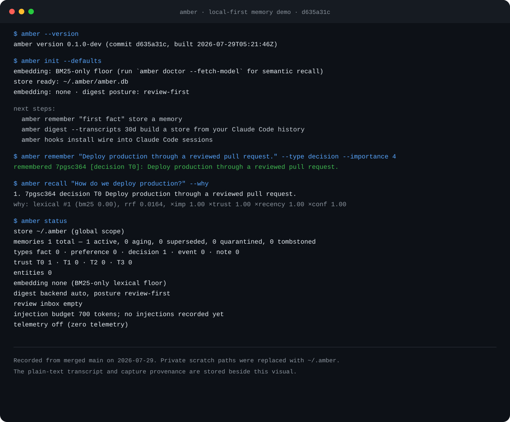

Stop re-explaining your project every session. Amber remembers durable decisions, preferences, and corrections in one local SQLite file. You approve what it keeps. No Docker, API key, or account.
go install github.com/ghostlygawd/amber/cmd/amber@latest
The stack, the conventions, the decision you explained on Tuesday — gone. You repeat yourself, session after session, and pay tokens to do it.
The file grows into hundreds of lines of stale facts and contradictions nobody audits, injected into every prompt. Put to the test, this practice often fails to improve task success while raising cost — and machine-generated context files can make results actively worse (the evidence).
Every major coding agent now ships auto-memory with the same design: the agent decides what to save; you find out afterwards. The store is a per-machine or per-vendor silo you can't take with you, and anything the agent reads (tool output, a web page) can write into what it believes — an attack already demonstrated in the wild.
amber init amber remember "We deploy billing to Fly.io on Fridays" --type decision amber recall "where does billing deploy" # ten minutes to a store that already knows your project — # built from session history you already have, then reviewed by you amber digest --transcripts 30d amber review

ETH Zurich researchers tested the most common practice — a static context file injected into every prompt — and found it often doesn't improve task success, raises inference cost, and that LLM-generated context files made results worse in most tested settings.
That isn't an argument against memory. It's a measurement of what happens when memory is unreviewed, unbudgeted, and never pruned — the exact failure Amber is built to prevent.
The same study shows what agents do follow: explicit, specific instructions. The dead weight is bulk repository overview — so Amber stores decisions, preferences, and corrections, nothing encyclopedic.
So Amber makes no accuracy promises. It shows its work instead: recall --why lists every injected memory and the reason. If memory isn't earning its tokens in your workflow, Amber is the tool that lets you see that. Read the details →
# the calm it aims for $ amber digest session.jsonl learned 4 things, updated 1, quarantined 1 (untrusted source), ignored the small talk.